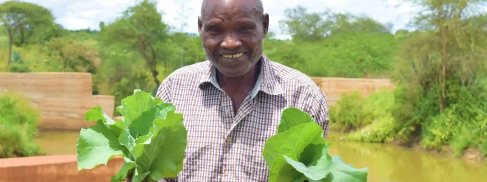

Water and Hunger
Improving Sustainability in Rural Africa
Relieving hunger in Africa has to begin with access to clean water. It may seem simple, but we forget that without access to a reliable
source of water, food is hard to grow and even more difficult to preserve and prepare.
It takes huge amounts of water to grow food. Just think, globally we use 70% of our water sources for agriculture and irrigation, and
only 10% on domestic uses.
Water is fundamental to relieving hunger in the developing world. 84% of people who don't have access to improved water, also live in
rural areas, where they live principally through subsistence agriculture. Sometimes, areas that experience a lack of water suffer because
of poor water management, but more often it is a relatively simple economic issue that can be addressed. This is the difference between
physical and economic scarcity.
The Rural-Urban divide
In Sub-Saharan Africa, people in urban areas areas are twice as likely as people in rural areas to have clean, safe water. Another waythat we see the urban-rural divide is in sanitation. While rural areas often have less access to sanitation facilities, in Sub-Saharan
Africa the situation is very poor. Only 24% of the rural population, and 44% of the urban population have access to sanitation
facilities. This means that less than one in three people in Sub-Saharan Africa have access to a proper toilet.
There is hope
A small investment in a clean, safe source of water can have a huge impact on both crop production and the nutrition of a community. Infact, one of the most encouraging things we find when we return to sites where wells have been installed is the many small gardens that
have popped up all around.
When we ask communities what improvements they've seen as a result of clean water, many send us pictures of their crops - proud of
the progress they've made.
Sometimes the technologies we fund specifically target increased crop production. For example, we fund weirs (sub-surface sand dams)
in very dry places where seasonal water flows can be captured and stored. The dams trap rain water on the few rainy days of the year and
over time, ground water levels rise.
People can then collect or store the water for drinking. The leftover water seeps into the ground and creates more fertile fields. Simple
sustainable irrigation in these dry areas becomes possible. Read Bridget's story to see how such a
project really can make a difference.
Access to Clean Water Improves...

Education
With water right on school property, students won’t miss class to quench their thirst, clean their classrooms, or supply school
kitchens with water. With water at home, kids don’t waste homework time walking long distances in search of water
for their households.

Health
Water projects close to home rescue people from drinking whatever dirty water they can find. More water also means less rationing,
so it’s easier to stay hydrated, wash hands, and clean homes, preventing future illnesses.

Hunger
In our service areas, almost everyone has a farm or garden. To
them, a lack of water means a lack of food. Improved crop
irrigation equates to healthier and more plentiful crops.

Poverty
Sourcing water when it’s scarce day after day saps everyone’s time and energy. With water at their fingertips, people spend more time investing in their households and livelihoods.